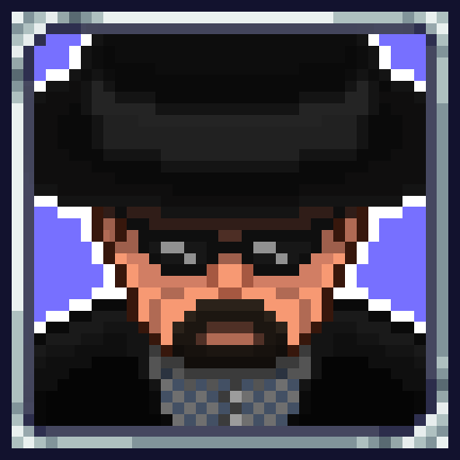
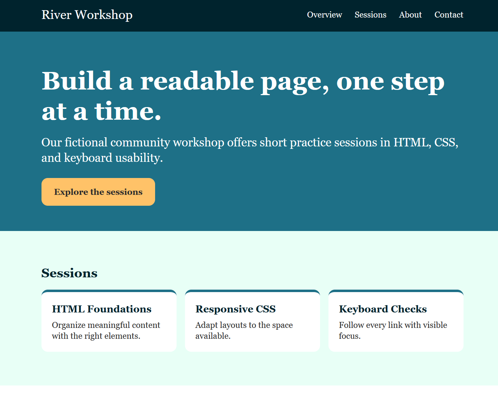

Hey, I'm Nick! I mod games and make web pages.
Welcome to my page! I've worked on multiple different projects, including a popular mod for the hit video game Terraria as well as different custom web pages.
See my projects
Projects

Nucc's Copious Cosmetic Collection
Over the past 4 years, I've created and maintained this popular cosmetic mod for Terraria. It includes multiple different outfits, pets and mounts that players are able to use that come from all sorts of different franchises and media.
Check out the mod on the Steam workshop!

CS300 Course: Assignment 2
An assignment for my CS300 course where I had to create a web page with navigation links for River Workshop.
View the live site for it here!
Case Studies
Case study: Nucc's Copious Cosmetic Collection
- What was it?
- It is a modification to the 2D indie game Terraria. It adds new content created solely by me.
- Who was it for?
- It was made both for my own interests and for other players. I did it to see what I could create on my own.
- How did you make it?
- It started from learning about C#. It was a combination of learning the intricacies of tModLoader, the tool needed to create and run mods for Terraria. Then I had to start working on my pixel art skills to create all the art assets for every outfit and item. After publishing, I would then also take suggestions from people who left comments or ideas for what I should add next.
- One decision, and why
- One decision I made was how players could acquire the items in the game. I made two different options that are still there to this day. I created an NPC that sells the items, but I made a toggle in the settings that lets you either obtain them through normal gameplay or lets you get them all for free without having to work for it. I felt this struck a good balance because some players don't want to necessarily work for it while others do want to.
- What did you check?
- I have to test literally everything and make sure it compiles correctly in the first place. Every tiny little change I make, I HAVE to recompile it just to check if my new item or asset works properly. I check the code, sprites, animations, and overall feel of everything with each update.
- What would you improve?
- Currently, I plan on making more updates. I plan to resprite, basically redraw, a lot of the current items as well as update the mod's main icon image.
Case study: Assignment 2 Page
- What was it?
- It was an assignment made to develop a web page with a prompt. It was an exercise in the design of a proper webpage as well as having useful links for navigation.
- Who was it for?
- It was mainly for my professor and my course, but in a way it was for myself so I could learn.
- How did you make it?
- I had to make a plan early on to decide what would go where. Then I had to add the proper requirements. I needed to space all information evenly and correctly. The nav links also had to work accordingly.
- One decision, and why
- I used a gap so that the cards would have proper spacing in between in each other. Not too cramped, not too far apart
- What did you check?
- I had to check the view on different sizes of screens, tabbing through the web page, and the navigation links to see if they took the user where they should.
- What would you improve?
- I would probably change the position of the book image to be more centered honestly.
Skills
- C# coding, modding experience, and pixel artistry: see my mod.
- Responsive layout with working navigation links: see my Assignment 2 page.
About
I'm a college student at Northeastern Illinois University. Currently, I am studying computer science with a concentration in cybersecurity. I have a passion for gaming, and I love to create new things.